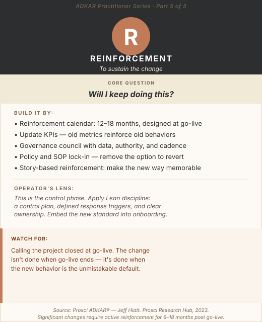

The Scrum team in Parts 2 through 4 had Desire, Knowledge and Ability. They were in rhythm within a few weeks, and over 10+ sprints they delivered 500+ user stories. I kept coaching through the ceremonies and tracked the team's story point velocity in Jira.
Then two things changed. The executive director who had mandated Scrum left, so the mandate was no longer in play. Later I was moved to a new role, to drive change outside of IT in other business units, and the discipline fell apart. The team knew the ceremonies and could have continued them. What they lost was the servant leader a Scrum Master provides, and the deck I had taught from defined the Scrum Master that way, as "Coach & Servant Leader."
Desire, Knowledge and Ability all held. Reinforcement was the gap: the sponsor and the coach were both gone, and I hadn't built a successor. Now I plan the handoff as part of the change, not after it.
Many programs reach the same place by a different road. The project closes, the steering committee goes from weekly to never, and the change management resources roll off to the next initiative. Fourteen months later, someone in operations notices that two-thirds of the team is running a hybrid of the old and new process, with undocumented workarounds everywhere, and a new initiative is being scoped to solve the problem the last one was supposed to solve.
That is what usually happens when Reinforcement is treated as optional. Prosci's explanation is that "the human brain is wired for habit," and "when employees don't achieve the Reinforcement element of ADKAR, they revert to old behaviors and develop workarounds." Prosci also finds that "too often, organizations skip this critical ADKAR element and move on to new projects." Reversion is the default, and it takes deliberate design to prevent it.
Foundation
What Reinforcement Is
Reinforcement is the fifth and final building block in the ADKAR model, and the one most often deferred until "after the stabilization period."
Prosci defines it as "the actions, systems and support that sustain a change over time," and says that "Reinforcement is achieved when the new way of working becomes an individual's default." It covers the structural, cultural and operational mechanisms that make the new behavior the expected, measured and recognized way of working, and the easiest one.
It has two jobs: preventing regression, the drift back to old behaviors, and sustaining the new capability, so the organization keeps building on the change instead of only defending it. Both need active design, and both need investment for longer than most change programs budget. Prosci's guidance is that Reinforcement "is an ongoing organizational commitment that teams should design into a change initiative from the start," and that "a single event or a project-close celebration is not enough."
A significant behavior change usually needs active Reinforcement for months after go-live, often well after the project team has moved on, before it is stable enough to hold without dedicated support.

ADKAR Practitioner Series, Part 5: Reinforcement. The phase that determines whether the change holds.
Diagnosis
How to Confirm a Reinforcement Barrier Point
Reinforcement problems look different from the earlier barrier points because they show up late: weeks or months after go-live, often after the change team has demobilized and the problem has been reclassified as "business as usual performance management."
Reinforcement Gap Signals
- Adoption metrics that improved after go-live are now declining
- Employees who were performing in the new state are reverting to old behaviors
- Workarounds that were eliminated are reappearing in modified forms
- New hires are being onboarded into the hybrid instead of the new state
- The new process is not reflected in updated SOPs, performance reviews or reporting dashboards
- Leadership behavior, in meetings, decisions, and what leaders reward and tolerate, has drifted back toward old patterns
A useful diagnostic: run an ADKAR assessment on the same population you assessed at go-live. If Desire scores have dropped (people have stopped wanting to maintain the change) or Ability scores have declined (people have lost proficiency without use), you have Reinforcement-specific regression. If Awareness scores have dropped, particularly among new hires or transfers, the onboarding system has a Reinforcement gap.
Program Design
Eight Blueprints for Sustaining Change
The Reinforcement Calendar (Design It Before Go-Live)
The most important Reinforcement tool is also the simplest: a planned calendar of activities that begins at go-live and runs for 12 to 18 months. A Reinforcement calendar typically includes:
- Monthly metrics reviews (adoption rates, process compliance, performance on key new-state indicators).
- Quarterly ADKAR pulse checks to find regression by population before it becomes entrenched.
- Story collection cycles, a monthly ask to managers: "Tell us one story of the new process working well or one challenge the team faced this week."
- Recognition events at defined milestones (30-day adoption, 90-day proficiency, 6-month sustained performance).
- Refresher communications at 60 and 90 days, particularly for populations that had early challenges.
- Community of practice sessions every quarter to sustain shared ownership.
The calendar makes Reinforcement a designed operating rhythm instead of a reaction. Building it before go-live tells stakeholders the change team knows the work doesn't end at launch, and it gives managers a clear picture of what sustained support looks like. It should also name who owns each activity after the change lead moves on.
Update the Metrics, or Reinforce the Old Behaviors
This is one of the strongest structural Reinforcement tools, and one of the most often missed: update every performance metric, dashboard and scorecard that touches the changed process to reflect the new-state success indicators.
Old metrics reinforce the old behavior. If a team's dashboard still measures efficiency against the old process baseline, the signal is that the old process is still what matters, and people follow what gets measured.
For new-state metric design:
- replace lagging measures of old-process performance with measures of new-state outcomes
- make adoption rates (process compliance, template adherence, system utilization) visible for at least the first 90 days
- put new-state indicators on leadership scorecards, so the change stays visible at the level where resource decisions are made
Governance Councils
A governance council is a cross-functional forum that meets regularly to review performance data, address cross-domain issues, celebrate progress, and sponsor continuous improvement on the new process. It gives the change ongoing ownership, so it doesn't drift into nobody's accountability.
Governance council design:
- Composition: Representatives from all major affected functions, at people manager level or above, with clear senior leadership sponsorship.
- Cadence: Monthly in the first year, then quarterly as the change stabilizes.
- Agenda: Process compliance metrics, barrier identification, success stories, decisions on unresolved issues, and continuous improvement opportunities.
- Authority: The council must be able to make decisions (resource allocations, process adjustments, escalations to senior leadership). Without decision rights it is only a meeting.
In process excellence and operational transformation work, the council is also the mechanism for continuous improvement, so the organization keeps building on the change. Over time it becomes the standard operating rhythm for managing the improved process.
Story-Based Reinforcement
Metrics show that the change is working, and stories help people believe it. Both are necessary.
Story collection is a discipline. Designate someone (often the change lead, a communications role, or a champion network coordinator) to ask managers and champions for stories on a regular schedule. When did the new process prevent a problem? Who handled an exception well this month? What used to take 30 minutes that now takes 10?
Share the stories in leadership communications (town halls, newsletters, manager updates), in governance council meetings (opening each meeting with one sets the tone), and in team meetings, where managers use them to normalize and celebrate the new way.
Stories work as reinforcement because they are specific and memorable in a way metrics are not. A team that hears "Maria in Chicago handled a supplier exception entirely through the new portal last week and resolved it in four hours instead of the two days it used to take" understands the value of the new process better than a compliance rate on a dashboard can show it.
Policy and SOP Lock-In (Remove the Option to Revert)
Individual discipline fades over time, and Reinforcement that depends entirely on discipline and goodwill fades with it. The most durable reinforcement is structural: it removes the mechanisms that make reverting easy.
- Updated SOPs and process documentation that reflect only the new process, with old documentation archived or removed so it is not available as a reference.
- System-enforced standards where the technology supports them: mandatory fields, workflow configurations that route approvals through the new path, automated compliance checks.
- Policy updates that reference the new process standards and make the old approach non-compliant.
- Template enforcement in documentation systems, report templates and communication tools, so the new standards are in the default workflow.
In Lean terms, this is mistake-proofing the change: designing the environment so the correct behavior is the easy one, and the old behavior takes deliberate effort.
After the dispatch redesign in Part 1, I recommended that the Operations Command Center team become the only team allowed to change work areas, so the zip code drift could not return. Leadership adopted the recommendation. On the cutover date everyone else's edit permission was removed, and supervisors requested changes through the central team by Slack and by phone. I explained to the supervisors that it was in their interest, because no one else could change their areas underneath them. The map held for the three years I was there to see it.
Integrate Change into Performance Management
One of the clearest signals that a change is permanent is putting it into the performance management cycle.
For individual contributors: include adherence to the new process as an explicit expectation in performance reviews during the first full review cycle after go-live.
For people managers: hold managers accountable for their team's adoption rates and for executing the coaching plan designed during the Ability phase. A manager who is not coaching their team through the adoption curve should not receive a favorable assessment on the change management competency.
For senior leaders: include change program outcomes (adoption rates, business case realization, team readiness for the next initiative) in the evaluation of the leaders who sponsored the change. This closes the accountability loop at the top.
Putting the change into performance management sends a strong signal, and leaving it out sends an equally strong one. Employees read "this didn't make it into the annual review" as "it probably doesn't matter."
The 30-60-90 Day Audit Cadence
Don't wait for performance problems to tell you whether the change is sticking. Run structured audits at 30, 60 and 90 days after go-live. Treat each audit as a diagnostic, and use its output to drive targeted interventions instead of general communications.
30-Day Audit
Focus: Are people using the new process? Where are workarounds appearing?
Format: Observation-based (watch live transactions or processes), supplemented by manager interviews.
Output: A prioritized list of Ability barriers to address and communication gaps to close.
60-Day Audit
Focus: Is adoption improving? Are the barriers identified at 30 days resolved?
Format: ADKAR pulse survey plus performance data review.
Output: Reinforcement calendar adjustments and targeted support for lagging populations.
90-Day Audit
Focus: Is the new process the default? Are specific teams or individuals still struggling?
Format: Performance dashboard review plus a sample of observations.
Output: Transition from intensive support to steady-state governance, and escalation of persistent outliers to people management.
Process Mining and Analytics for Compliance
For organizations with the data infrastructure, process mining tools give an objective, continuous view of whether the new process is being executed as designed, at a scale and frequency observation-based audits cannot match.
Process mining (tools like Celonis, Signavio, UiPath Process Mining, or well-designed Power BI event log analysis) reconstructs the paths a process followed from system event logs. Applied to a changed process, it can:
- Show what share of transactions follow the new process versus old paths or workarounds.
- Find the steps where variance is highest, which are the points where people are deviating.
- Track compliance trends over time, showing whether adoption is improving, plateauing or regressing.
- Segment compliance by team, location or individual when the data volume supports it.
This data moves governance council meetings from anecdote to evidence. When the council asks "how are we doing?", the dashboard gives a precise answer and points to where Reinforcement investment should go. A simpler version works too: after the dispatch redesign, I gave the central team a dashboard that flagged any work area drifting into error or poor design, so reversion was visible before it hurt dispatch.
The Operator's Lens
This is the Control phase, and it deserves the same rigor. In Lean Six Sigma, DMAIC doesn't end at Improve. Define, Measure, Analyze, Improve, Control: the Control phase is where process gains are locked in and protected, and Reinforcement is the change management equivalent. Apply the same discipline: a control plan, defined response triggers ("if compliance drops below X%, the following actions are taken"), regular measurement and clear ownership. On the ITAM program, the business case had a five-year horizon, and at five years I went back to the same asset data and measured $61M realized against a $40M target. The practitioner who skips Control should expect to repeat the improvement cycle, and so should the change manager who skips Reinforcement.
Turnover erodes change unless onboarding is designed for it. Every employee who joins after go-live and is not onboarded into the new standard is a reinforcement gap. Operations with meaningful turnover need to treat a new-state onboarding program as a Reinforcement requirement: the SOPs, training modules and job aids for new hires must reflect the new process instead of the legacy one. This seems obvious, and it is routinely missed.
Leadership behavior is the strongest reinforcement signal available, and it costs nothing. When senior leaders use the old terminology in meetings, tolerate the old process when they see it, leave the new process metrics out of their reviews, or quietly let compliance slide for their direct reports, the workforce reads the signal correctly: the change is optional. When leaders refer to the new process visibly and specifically, recognize teams that execute it well, and hold their direct reports to the standard, adoption follows. No governance council, dashboard or incentive program is as efficient as consistent, visible leadership behavior. When the executive director who mandated Scrum left, the mandate left too.
Common Traps
Mistakes to Avoid
Closing the project at go-live.
This is one of the most costly mistakes in change management. The change is done when the new behavior is the unmistakable default, measured, recognized and structurally supported, and that takes months.
Moving the change lead without a successor.
When I moved roles, the Scrum team still knew the ceremonies, and the discipline fell apart anyway. Plan who takes over the coaching role as part of the change, before the person doing it moves on.
Leaving old metrics and dashboards in place.
Old metrics reinforce old behaviors. Update them, or accept the mixed signal.
Skipping governance because "it should maintain itself."
It won't. Process gains without governance erode. Build the council, define its authority, and give it the data it needs to lead.
Forgetting onboarding.
The change was communicated to the existing workforce, and new joiners receive neither the communication nor the rationale. Without deliberate design they learn the hybrid, and they spread it within their teams.
Think of a change you worked hard on that didn't last. What was missing after go-live, and who was supposed to own it?
Source references: Prosci, The Prosci ADKAR® Model for Organizational Change Success (eBook): "wired for habit," reverting to old behaviors, skipping Reinforcement. Prosci, "ADKAR Model: Reinforcement" (prosci.com blog): definition, the new way as the default, designing it in from the start. VisualSP change management practitioner research. Sources of Insight: ADKAR application guides. Process mining: Celonis, Signavio practitioner documentation.